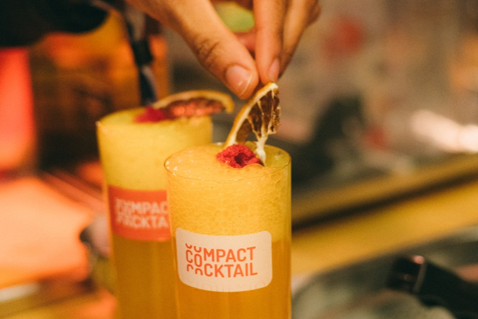
Bárok
6× gyorsabbmint a kézi keverés
- Kevesebb készletezés — egy hordó, nem egy polcnyi
- Kevesebb beszállító — egyetlen rendelés
- Egyszerűbb hulladékkezelés — nincs MOHU-gond
Compact Cocktail csapon
Igazi koktélok csapról. Csatlakoztasd a hordót, húzd meg a csapot, kínáld.

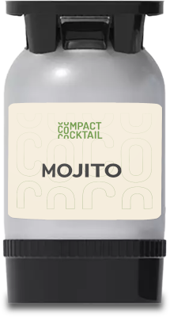
Országszerte bizalommal
Hogyan működik
Kész koktélrendszer szabványos sörcsapra.
Hordó a CO₂-vonalra.
Egy koktél 10 másodperc alatt.
72–180 ital hordónként.
Gyorsteszt
A legtöbb hely már készen áll. Derítsd ki pár kattintásból.
Kinek való

6× gyorsabbmint a kézi keverés
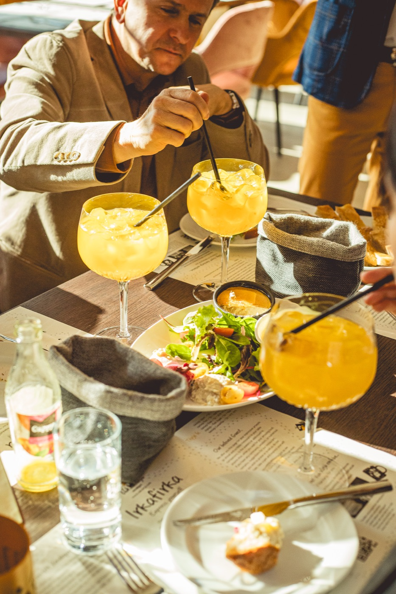
1 italminden ponton ugyanaz
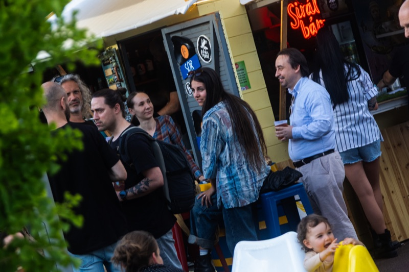
180 / óraamit egy kézi pult nem bír el
Amit csapolnál
Planteray rum, lime, friss menta, szóda · 9.5%
Tequila, lime, grépfrút, szóda · 9.5%
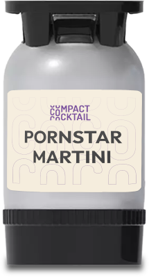
Vodka, maracuja, vanília, lime · 9.5%
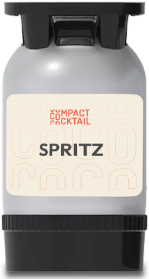
Aperol, pezsgő, szóda · 8%
Vodka, mangópüré, lime, gyömbérsör · 9.5%
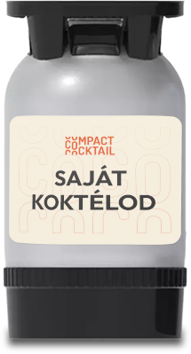
Saját recept, saját hordó, saját címke · 500 litertől
Élesben
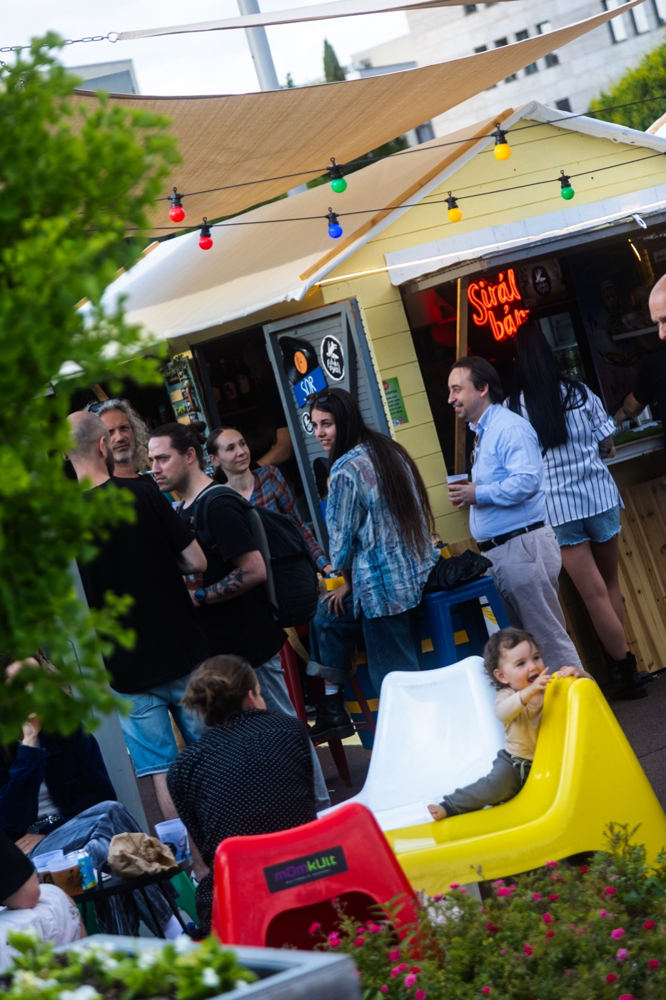
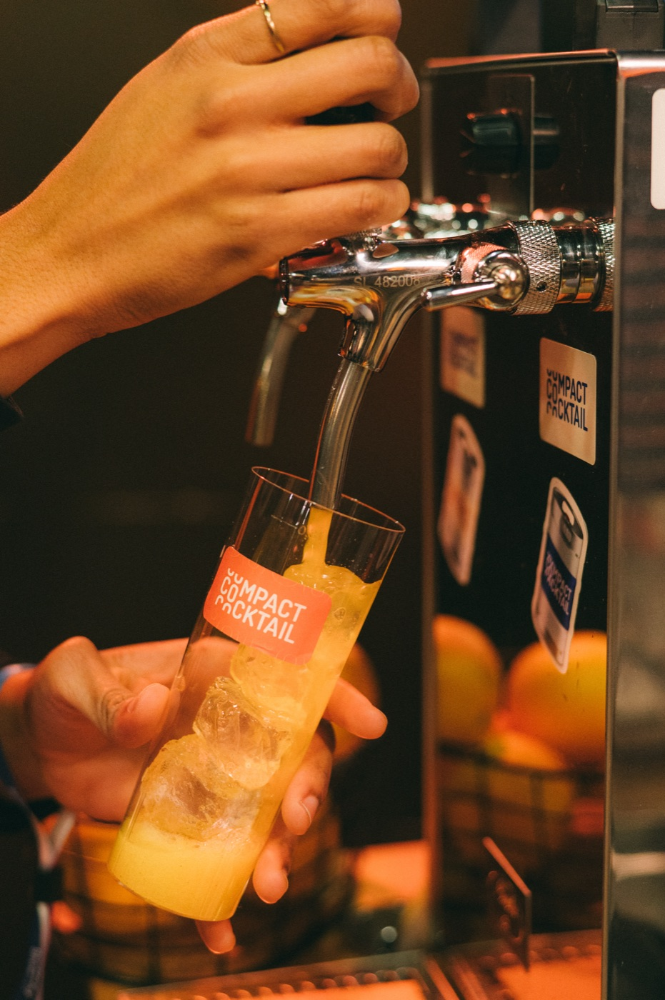
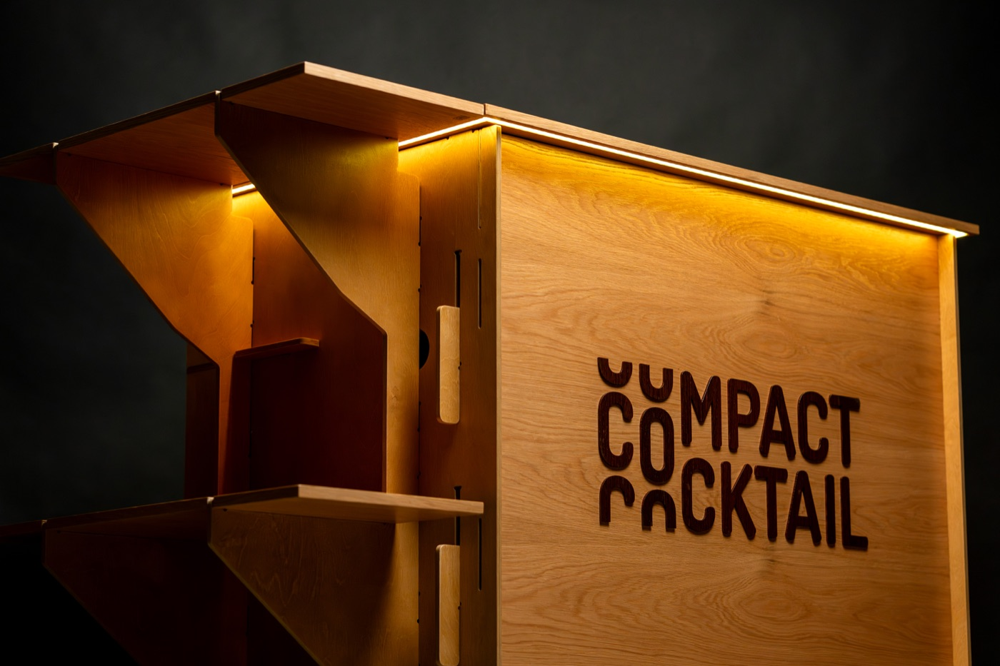
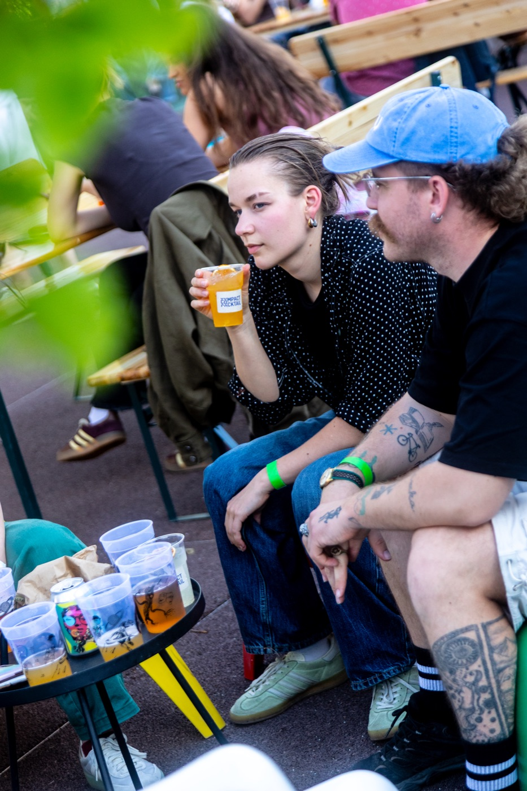
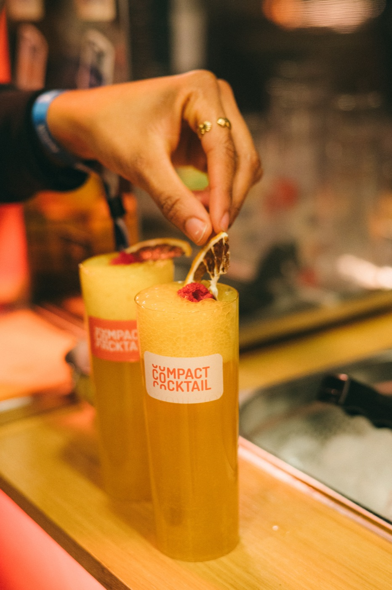
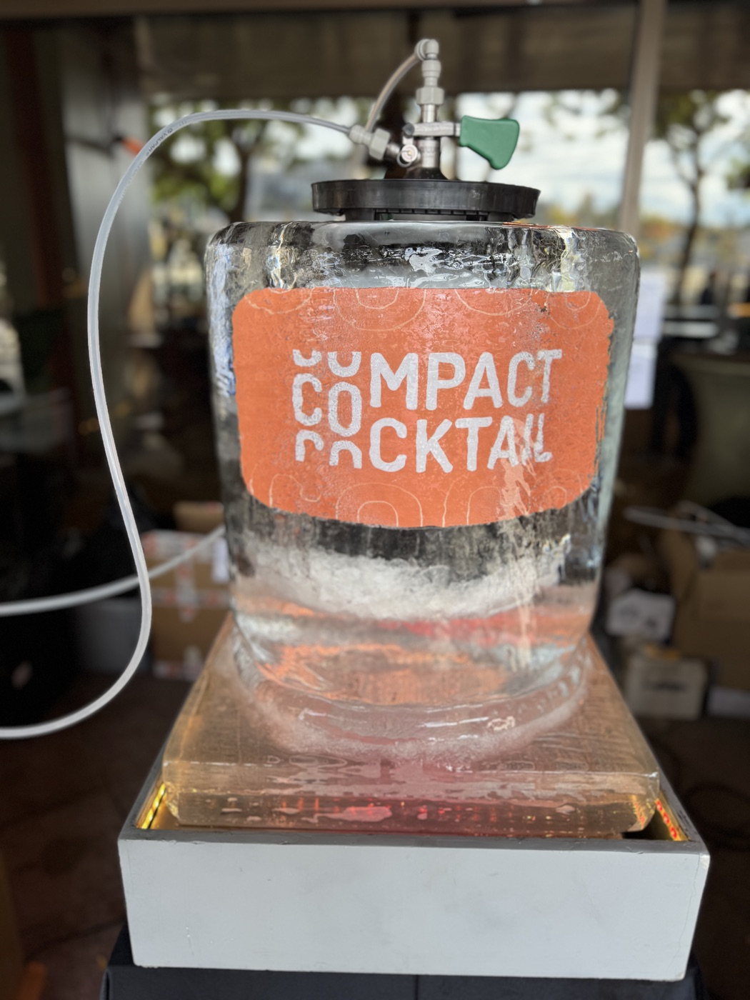

Kik állnak mögötte
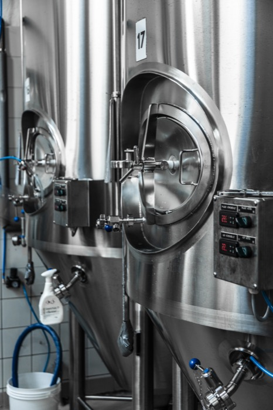
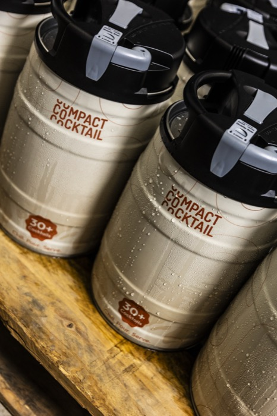
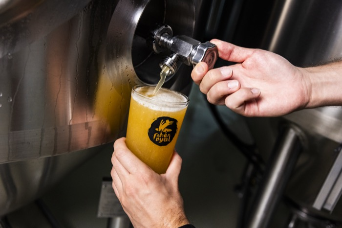
Jó tudni
Semmilyen különleges eszköz nem kell — a CoCo klasszikus sörcsapon keresztül folyik. Csak egy „F” típusú KeyKeg csatlakozóra és szabványos tisztítófelszerelésre van szükség, ami a legtöbb helyen már megvan. Nincs csapod? Egy mobil egység megoldja, a beüzemelést pedig közösen intézzük.
12 literes PolyKeg és 30 literes hordó. Egy 12 literes PolyKeg kb. 72–75 adagot ad — mindegyik 160 ml, pontosan úgy elkészítve, ahogyan egy bártender csinálná, a szükséges hígítással együtt.
Megnyitva 2–3 hétig. A PolyKeg bag-in-keg kialakítása miatt a gáz csak kívülről nyomja a zacskót — sosem érintkezik a koktéllal, így semmi nem oxidálódik. Bontatlanul a hordó a gyártási dátumtól számítva legalább 12 hónapig eláll.
Semmilyen — pontosan úgy működik, mint egy sör csapolása. Egy koktél 10–12 másodperc alatt kész, szemben a kézzel készített ital 2–3 percével, az alkoholtartalom (8–10% ABV) pedig pontosan megegyezik a hagyományos recepttel.
Budapesten belül ingyenes a kiszállítás legalább egy hordós rendelés esetén; vidékre partner fuvarozókkal szervezzük. Személyesen is átvehető a Soroksári úti telephelyünkön. Az első alkalommal veled együtt üzemeljük be a rendszert, utána pedig folyamatos támogatást és hibaelhárítási kézikönyvet kapsz.
A 12 literes hordók íztől függően kb. 57.000–67.000 Ft-ba kerülnek (kb. 690–890 Ft/ital), a 30 literesek ~130.000 Ft-tól indulnak. Rendelésenként 2.000 Ft adminisztrációs díj kerül felszámításra, az árak nem tartalmazzák az áfát. A teljes íz- és mennyiségalapú árlista a fenti árlistában található — vagy írj nekünk, és végigvesszük veled a számokat.
Foglalj kóstolót · semmi elköteleződés
Köszönjük — egy napon belül jelentkezünk.

Otthonra
Csak kipróbálnád otthon? Ugyanezek a koktélok 5 literes partihordóban.